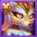

ソムナガイド：カイラ対策の最重要ヒーロー ヒーローウォーズ アライアンス
- 著者: Alexandre Domingos. .
カイラが圧倒的な存在感を放つ今のメタでは、確実に止められる対策ヒーローを持っているかどうかが勝敗を左右します。そこで注目したいのがソムナです。眠り、デバフ、羊化を使って高火力ヒーローを機能停止に追い込めるコントロール特化ヒーローであり、カイラ対策として非常に優秀です。
すでに対カイラ性能で知られるリアンと組ませると、ソムナはカイラ編成にとって悪夢のような状況を作り出します。このガイドでは、ヒーローウォーズ アライアンスでソムナをどう使うべきか、役割、相性、入手方法、そしてなぜ現環境で育成価値が高いのかをまとめて解説します。
Somna の完全動画を下でご覧ください: Somnaの睡眠と沈黙の力の真実。 技術的な要約とステータス表は動画のすぐ後にあります。

📋 ソムナガイド - 目次
ソムナとは？
ソムナは神秘の道に属する中衛のコントロールヒーローです。敏捷性を軸にしたスキルで敵の物理ダメージを下げ、アーマー貫通を抑え、さらに敵を羊に変えてしまいます。高い瞬間火力で押してくるカイラのような相手に対して、非常に厄介な戦術的ヒーローです。

- グリフクラス: コントロール
- 配置: 中衛
- メインステータス: 敏捷性
- 陣営: 神秘の道
- ソウルストーン入手方法: 特別イベント、レルム
- 相性: リアン、サトリ、フォリオ
- ヒドラ評価: C
ソムナはヒドラでは突出しないものの、PvPでは非常に危険です。カイラ中心の編成に対して特に強く、リアンと組ませることで前線を止めながらバースト連携を切断できます。アストラルスキン+は今でも終盤の最大級の攻撃的スキン強化であり、新しいDawn Skinは魔法反射によって魔法ダメージに対する防御的な選択肢を追加します。
ヒーローウォーズ アライアンスでカイラ対策に困っているなら、ソムナを軸にした編成は非常に有力な答えになります。
現在のメタにおけるソムナの総合評価
この簡易評価では、ソムナのコントロール性能、ダメージ圧力、チームシナジー、単体での完結度をもとに、現在のヒーローウォーズ アライアンス環境での立ち位置をまとめています。
ソムナの長所と短所 - ヒーローウォーズ アライアンス
✅ 長所
- 睡眠による優秀な群集制御で、敵後衛の動きを大きく乱せます。
- リアン、サトリ、フォリオのように行動不能の敵から利益を得るヒーローと好相性です。
- 武器アーティファクトは敵のHPが低い時にクラッシングを付与し、あらゆる与ダメージを押し上げます。
- グースのような回復役と組むと、試合をひっくり返す力があります。
- 物理寄りの敵編成に対し、制御と弱体化で高い妨害性能を発揮します。
❌ 短所
- 眠った敵は被弾で起きるため、群集制御を最大化するには味方の連携が必要です。
- 現在はタリスマンの選択肢が少なく、ビルドの柔軟性はまだ高くありません。
- 耐久力は低めで、長期戦では保護や回復支援が必要です。
- 単体性能よりもシナジー依存が強く、コンボ編成で真価を発揮します。
現在のメタにおけるソムナの総合評価
この簡易評価では、ソムナのコントロール性能、ダメージ圧力、チームシナジー、単体での完結度をもとに、現在のヒーローウォーズ アライアンス環境での立ち位置をまとめています。
ソムナの長所と短所 - ヒーローウォーズ アライアンス
✅ 長所
- 睡眠による優秀な群集制御で、敵後衛の動きを大きく乱せます。
- リアン、サトリ、フォリオのように行動不能の敵から利益を得るヒーローと好相性です。
- 武器アーティファクトは敵のHPが低い時にクラッシングを付与し、あらゆる与ダメージを押し上げます。
- グースのような回復役と組むと、試合をひっくり返す力があります。
- 物理寄りの敵編成に対し、制御と弱体化で高い妨害性能を発揮します。
❌ 短所
- 眠った敵は被弾で起きるため、群集制御を最大化するには味方の連携が必要です。
- 現在はタリスマンの選択肢が少なく、ビルドの柔軟性はまだ高くありません。
- 耐久力は低めで、長期戦では保護や回復支援が必要です。
- 単体性能よりもシナジー依存が強く、コンボ編成で真価を発揮します。
ソムナのレジェンダリー遺物スキル強化優先度 - ヒーローウォーズ アライアンス
遺物はソムナの睡眠と羊化をさらに危険な群集制御へ変えます。スキルの強化だけでなく、物理攻撃とHPも上昇し、弱体化やダメージ計算式を直接伸ばします。遺物の仕組みを詳しく知りたい場合は、遺物完全ガイドも確認してください。
1位 - ララバイ・ヴェール
これはソムナの中核スキルです。すべての敵を7秒間眠らせて戦闘から切り離します。目覚めた敵には「眠気」効果が付き、10秒間物理ダメージが低下します。敵は同時に最大3スタックまで保持できます。戦場全体を止めるこのスキルこそ、最優先で強化すべき理由です。
スキル情報
- 1スタックごとの物理ダメージ低下式: (25% 物理攻撃 + 3,000)
- キーワード: デバフ、睡眠、コントロール
- アニメーション遅延: 1秒
- 持続時間: 7秒
- 範囲: 3
- 射程: 3000
- ヒット数: 10
眠りのタリスマン装備時の式
- 計算式 1: 1スタックごとの物理ダメージ低下: 35,689.5 (25% × 130,758 + 3,000)
忘却のタリスマン装備時の式
- 計算式 1: 1スタックごとの物理ダメージ低下: 37,489.5 (25% × 137,958 + 3,000)

育成優先度: 非常に高い - 敵全体を止め、ソムナのキット全体を成立させる最重要スキルです。
1位 - ララバイ・ヴェール（強化スキル）レジェンダリー遺物: レベル10
この強化により睡眠効果はさらに危険になります。敵がダメージで目覚めた瞬間、即座に眠気を3スタック獲得します。さらに最大スタック数が10まで増えるため、終盤でも敵を大きく弱体化できます。

育成優先度: 非常に高い - 最強の制御手段をさらに安定させ、敵を長く無力化します。
2位 - ドロウジー・ブレッシング
前列の味方が12秒間、攻撃するたびに敵へ眠気を拡散できるようになります。神秘ヒーローなら持続もさらに長くなります。眠気は物理ダメージとアーマー貫通を両方下げるため、派手さはなくても戦闘全体の安定感を大きく高めます。
スキル情報
- 初回クールダウン: 5秒
- クールダウン: 20秒
- アニメーション遅延: 1秒
- 持続時間: 12秒
- 射程: 3000
- ヒット数: 8
- アーマー貫通低下式: (20% 物理攻撃 + 2,400)
眠りのタリスマン装備時の式
- 計算式 1: アーマー貫通低下: 28,551.6 (20% × 130,758 + 2,400)
忘却のタリスマン装備時の式
- 計算式 1: アーマー貫通低下: 29,991.6 (20% × 137,958 + 2,400)

育成優先度: 高い - 長期戦で敵全体を弱体化し続けるのに優秀です。
3位 - カース・オブ・ザ・ウール
近くの敵に眠気を付与し、物理ダメージを与え、すでに3スタックある敵を3秒間無力な羊へ変えます。羊は攻撃できず逃げ回ります。事前に眠気を積んでおく必要はありますが、条件が整えば非常に強力です。
スキル情報
- 物理ダメージ式: (100% 物理攻撃 + 6,000)
- 初回クールダウン: 7秒
- クールダウン: 15秒
- キーワード: デバフ、コントロール
- アニメーション遅延: 1秒
- 持続時間: 3秒
- 範囲: 200
- 射程: 3000
- ヒット数: 3
眠りのタリスマン装備時の式
- 計算式 1: 物理ダメージ: 136,758 (100% × 130,758 + 6,000)
忘却のタリスマン装備時の式
- 計算式 1: 物理ダメージ: 143,958 (100% × 137,958 + 6,000)

育成優先度: 高い - ララバイ・ヴェールで眠気を積んだ後の追撃として非常に危険です。
3位 - カース・オブ・ザ・ウール（強化スキル）レジェンダリー遺物: レベル20
このレジェンダリー強化は眠気スタックの追加付与と、対象のスタック数に応じた追加ダメージを与えます。羊化を起こしやすくなり、ダメージ性能も上がります。強力ですが、序盤必須というより終盤での伸びです。
スキル情報
- 眠気1スタックあたりの追加物理ダメージ式: (20% 物理攻撃 + 600)
- キーワード: デバフ、コントロール、レジェンダリー
眠りのタリスマン装備時の式
- 計算式 1: 1スタックごとの追加物理ダメージ: 26,751.6 (20% × 130,758 + 600)
忘却のタリスマン装備時の式
- 計算式 1: 1スタックごとの追加物理ダメージ: 28,191.6 (20% × 137,958 + 600)

育成優先度: 非常に高い - ただし本体スキルを十分強化してから投資したい強化です。
4位 - サイレンス・オブ・ザ・シープ
ソムナが攻撃されるたび、相手に眠気3スタックを与え、即座に羊へ変えます。役立つ反撃スキルですが、受け身であり、被弾時にしか機能しません。命を救うことはありますが、能動スキルほど安定しません。
スキル情報
- 追加物理ダメージ式: (10% HP + 12,000)
- キーワード: デバフ、コントロール
- 範囲: 100
- ヒット数: 3
眠りのタリスマン装備時の式
- 計算式 1: 追加物理ダメージ: 114,991.8 (10% × 1,029,918 + 12,000)
忘却のタリスマン装備時の式
- 計算式 1: 追加物理ダメージ: 96,841.8 (10% × 848,418 + 12,000)

育成優先度: 高い - 守備面では便利ですが、攻撃的な制御スキルより優先度はやや下がります。
5位 - トワイライト・ハード（新スキル）レジェンダリー遺物: レベル1
15秒ごとに、ソムナ自身が制御されていなければ最も遠い敵を羊に変えます。危険な後衛を狙えるため強力ですが、スタンや沈黙を受けないことが前提です。
スキル情報
- キーワード: コントロール、レジェンダリー
- クールダウン: 15秒
- 持続時間: 3秒
- ヒット数: 3

育成優先度: 高い - 状況次第では強いですが、中核スキルほどの安定感はありません。
6位 - エターナル・スリープ（新スキル）レジェンダリー遺物: レベル30
敵を再び羊に変えられるようになるまでの待機時間を10秒から5秒へ短縮します。強そうに見えますが、習得時期が遅く、すでに得意な部分をさらに伸ばす贅沢強化です。
スキル情報
- キーワード: パッシブ、レジェンダリー
- 効果: 羊への再変身クールダウンが10秒から5秒に短縮。

育成優先度: 非常に高い - ただし育成後半まで急がなくてよい強化です。
ソムナのレルムスキル - ヒーローウォーズ アライアンス
ソムナのレルムは槍兵を軸に、攻撃ボーナスと強力なパッシブ効果を与えます。前線の生存力を高めつつ、レルム戦で追加の制御を付与できます。
ハンターズ・インスティンクト（レベル5）
射手が受けるダメージを20%減らし、槍兵の与ダメージを10%上昇させます。ソムナの槍兵は攻撃面でさらに危険になり、敵射手からの圧力も軽減されます。
スキル情報
- 射手の被ダメージ軽減: 20%
- 槍兵の与ダメージ増加: 10%
シーウルフズ・エイム（レベル5）
槍兵の攻撃に13%の確率で1ターンのスタンを付与します。各攻撃に制御要素が加わるため、長期戦で非常にいやらしい性能になります。
スキル情報
- スタン確率: 13%
- スタン時間: 1ターン
ソムナにおすすめのスキン - ヒーローウォーズ アライアンス
序盤から中盤では、ソムナは依然として物理攻撃の恩恵を最も大きく受けます。睡眠圧力とアーマー貫通低下の主要な計算式が物理攻撃に直接依存するからです。アストラルスキン+は終盤PvPにおける攻撃的な最重要スキンで、通常のアストラルスキンで10,650のアーマー貫通、Skin+でそれが21,300まで倍増し、装甲の厚い前衛に対してもソムナの物理圧力が通りやすくなります。新しいDawn Skinは魔法反射 +2,960を与え、魔法チーム相手には役立ちますが、コントロールやダメージの計算式は伸ばしません。

デフォルトスキン
ボーナス: 敏捷性 +1135
• 敏捷性から得る物理攻撃: +3,405
• 敏捷性から得るアーマー: +1135
敏捷性1ポイントごとに物理攻撃2、アーマー1、さらに敏捷性がメインステータスなら追加で物理攻撃1を獲得します。
育成優先度: 高い - 火力と防御を両方少しずつ伸ばせる、バランスの良いスキンです。

スペーススキン
ボーナス: 物理攻撃 +7095
育成優先度: 非常に高い - ソムナの総合火力を大きく引き上げ、制御と追撃の両方を強化します。

デモニックスキン
ボーナス: アーマー +10650
育成優先度: 中 - 生存力は上がりますが、主な役割である制御とダメージの伸びは控えめです。

アストラルスキン+（Skin+）
アストラルスキン+は、ソムナの物理圧力を高める高級PvP向けスキンです。通常のアストラルスキンでアーマー貫通 +10,650を獲得し、Skin+まで解放するとその値は実質的に+21,300 アーマー貫通になります。
- アーマー貫通（通常アストラル）: +10,650
- アーマー貫通（アストラル Skin+）: +21,300
育成優先度: 終盤PvPでは極めて高い - このスキンはララバイ・ヴェールやドロウジー・ブレッシングの計算式を直接強化しません。ですが、カース・オブ・ザ・ウールや羊化後の追撃、装甲依存の前衛相手の圧力を大きく伸ばし、純粋なコントロール役からタンクも削れるコントロール役へ変えてくれます。
Alexandreのヒント: パワー面ではソムナ最大級の終盤PvP強化ですが、入手難度も非常に高いです。通常のアストラルスキン解放にはSeer's Gameを1回クリア、Skin+獲得には5回のクリアが必要です。無課金プレイヤーにとっては、通常版が後で無料化されるのを待ち、さらに将来的にSkin+が英雄チェストへ入るのを期待する長期戦になります。

Dawn Skin
Dawn Skinは魔法反射 +2,960を与えます。魔法反射は、受ける魔法ダメージを完全に回避し、そのダメージの20%を攻撃者へ反射する可能性をソムナに与えます。発動した場合、その魔法攻撃からソムナはダメージを受けません。
- 魔法反射: +2,960
- 魔法ダメージにのみ有効です。物理ダメージと純粋ダメージは反射できません。
- ソムナがスタン中でも発動できますが、沈黙中は発動しません。
- 発動率:
(Magic Reflection / (Magic Reflection + 敵のメインステータス)) × 100% - 敵のメインステータスとは、攻撃者に応じた力、素早さ、知力のことです。
育成優先度: 低い - 魔法反射はソムナにとってニッチな防御ステータスです。魔法バーストを耐えたり、メイジ編成をたまに反撃したりできますが、ララバイ・ヴェール、ドロウジー・ブレッシング、カース・オブ・ザ・ウール、物理攻撃依存のコントロール圧力は強化しません。Space、デフォルト、アストラルスキン+などの主力スキンを優先した後に育てましょう。
ソムナのアーティファクト育成優先度 - ヒーローウォーズ アライアンス

ソムナの武器アーティファクトは、必殺技発動時に味方全体へ強力なクラッシング上昇を与え、物理圧力を底上げします。

1位 - 武器アーティファクト: サー・ダンプリング
ソムナの武器アーティファクトによるクラッシングは、HPが低い敵に対する物理・魔法・純ダメージすべてを強化します。そのため、フォリオやサトリのような高火力アタッカーと非常に相性が良く、弱った敵の押し込み性能を大きく高めます。
育成優先度: 非常に高い - 味方全体の圧力を伸ばす、ソムナ最大級のチーム貢献要素です。

2位 - 書物アーティファクト: 不屈のグリモワール
このアーティファクトはソムナのHPを+53,394、タフネスを+2,967増加させます。タフネスはHPが低い時に受けるダメージ全般を抑えるため、再び制御スキルを使うまでの生存率を高めます。
育成優先度: 高い - とくにカイラのようなバースト相手に対して、防御面で非常に価値があります。

3位 - 指輪アーティファクト: 敏捷リング
ソムナの基礎敏捷性を上げ、物理攻撃とアーマーを少し補強します。全体ステータスの底上げにはなりますが、制御性能を直接伸ばすわけではありません。
育成優先度: 中 - 長期的には有用ですが、睡眠や変身を伸ばす要素より優先度は下です。
ソムナのグリフ育成優先度
ソムナのグリフは生存力と対カイラ性能の両方を高めます。実戦ベースで見た育成優先度は以下の通りです。

1位 - 物理攻撃 +8340
物理攻撃はソムナのアクティブスキル火力、とくに1番目と必殺技の圧力を直接伸ばします。カイラのような高火力相手への対抗力も上がります。
育成優先度: 高い - 後衛への圧力とバーストを最大化する上で重要です。

2位 - HP +122800
このグリフは長期戦におけるソムナの生存力を高めます。タフネスやグースのような回復役と組むと、圧力をかけ続けやすくなります。
育成優先度: 高い - タフネスや持久寄り編成との相性が良好です。

3位 - タフネス
タフネスはHPが低い時の全ダメージを軽減する強力な新ステータスです。逆転を狙う終盤局面でソムナを残しやすくします。
育成優先度: 中 - 条件付きながら、刺さる場面では非常に強力です。

4位 - アーマー +12850
アーマーはカイラなど物理アタッカーに対する被ダメージを減らします。ただしタフネスの方がより広いダメージ種別に対応するため、序盤の最優先ではありません。
育成優先度: 中低 - 防御面では有用ですが、タフネスと役割が少し重なります。

5位 - 敏捷性 +2110
敏捷性は物理攻撃とアーマーを少し上げますが、他のグリフほど影響は大きくありません。
育成優先度: 低い - 現在の役割では最も優先度が低いグリフです。
ソムナのタリスマン最大ステータス比較 - ヒーローウォーズ アライアンス
以下は、各タリスマンを最大まで装備した時のソムナのステータス比較です。どのタリスマンが戦闘性能にどう影響するかを確認できます。
| ステータス | 眠りのタリスマン | 忘却のタリスマン |
|---|---|---|
| 知力 | 4,098 | 4,098 |
| 敏捷性 | 17,630 | 15,630 |
| 力 | 3,802 | 3,802 |
| HP | 1,029,918 | 848,418 |
| 物理攻撃 | 130,758 | 137,958 |
| 魔法攻撃 | 27,045 | 27,045 |
| アーマー | 52,881 | 50,881 |
| 魔法防御 | 11,778.9 | 11,778.9 |
| タフネス | 9,927 | 13,927 |
| アーマー貫通 | 23.178 | 23.178 |
| クラッシング | 1,564 | 1,564 |
主な違い: 眠りのタリスマンはHP (+181,500)と敏捷性が大きく伸び、ソムナを硬くしつつ、HP依存のサイレンス・オブ・ザ・シープも強化します。忘却のタリスマンは物理攻撃 (+7,200)とタフネスを伸ばし、他のスキルのダメージと弱体化性能を高めます。
ソムナのタリスマンガイド - ヒーローウォーズ アライアンス
眠りのタリスマン
スキンは装備していなくても常時ボーナスが有効ですが、タリスマンは装備中のものだけが戦闘で有効です。そのため、どれを付けるかで性能差が大きく出ます。

ソムナの眠りのタリスマンは非常に相性が良く、最大HPを大幅に増やします。物理・魔法・純ダメージすべてに対する耐久力が上がり、必殺技と武器アーティファクトを発動するまで場に残りやすくなります。
 眠りのタリスマン |
メインステータス |
|---|---|
|
敏捷性 |
+2,000 敏捷性 各敏捷性ポイントで得るもの: – 物理攻撃 2ポイント; – アーマー 1ポイント; – 敏捷性がメインステータスなら追加で物理攻撃 1ポイント。 |
| スロット1 | スロット2 | スロット3 | リロール合計 |
|---|---|---|---|
HP +60,500 |
HP +60,500 |
HP +60,500 |
HP +181,500 |
- 3つの副スロット合計: HP +181,500 (60,500 × 3)
- この大量のHP増加により、ソムナの全ダメージ種別に対する生存力が大きく向上します。
- 必殺技発動まで耐えて、武器アーティファクトで味方全体を強化したい編成に最適です。
忘却のタリスマン - VIP
忘却のタリスマンは、メインステータスのタフネスにより、瀕死時の耐久力を大きく引き上げます。

タフネス:
🔸 HPが低い時に敵から受けるダメージを全般的に軽減します。
🔸 物理・魔法・純ダメージすべてに適用されます。ただし味方スキルによるHP消費は除きます。
🔸 軽減率は次の式で決まります:
(タフネス / (タフネス + 敵のメインステータス)) × 100%
 忘却のタリスマン |
メインステータス |
|---|---|
タフネス |
+4,000 タフネス |
| スロット1 | スロット2 | スロット3 | リロール合計 |
|---|---|---|---|
物理攻撃 +4,400 |
物理攻撃 +4,400 |
物理攻撃 +4,400 |
物理攻撃 +13,200 |
物理攻撃スロットは、ソムナの攻撃と制御スキル全般を伸ばし、敵の物理攻撃とアーマー貫通を下げながら自分の圧力も高めます。長期戦では、より硬く、より危険な存在になります。
メインステータススロット: タフネス +4,000
リロールスロット: 物理攻撃 +4,400 ×3
ソムナの対策 - ヒーローウォーズ アライアンス

アイリスは、ソムナのデバフ依存の仕組みを逆利用することで対策できます。「ソウル・バーニング」はデバフを受けている敵の数に応じてダメージを与え、HPの低い敵を処刑できます。長期戦になりやすいソムナ相手とは非常に噛み合います。さらに「ミステリアス・パクト」は、敵がデバフや印を付与した時に物理攻撃と魔法攻撃を下げ、ソムナの支援力と生存力をさらに削ぎます。

ソレイルは強力なアンチコントロール性能によりソムナへ非常に有効です。「古き神の印」で制御効果に依存する敵、つまりソムナのような相手を大きな追加ダメージで罰します。さらに「古き神の祝福」は、敵が制御スキルを使うたびに味方のダメージと回復量を強化します。これによりソムナの圧力を和らげるだけでなく、彼女の制御そのものをソレイル側の利益へ変えてしまいます。
ソムナと相性の良いヒーロー - ヒーローウォーズ アライアンス
ソムナは、睡眠のような制御を重ねたり、弱体化した敵を一気に仕留めたりできるヒーローと非常に強い相性を持ちます。以下は、とくに相性の良い代表例です。

フォリオの「Ancient Scriptures」は敵を拘束し、遅延範囲ダメージを発生させます。これによりソムナは妨害されずに睡眠系スキルを使いやすくなり、敵がまとまることで範囲制御も当てやすくなります。

リアンは敵を魅了し、しかも自分の攻撃で眠りを解除しにくいため、ソムナの睡眠依存スキルと非常に噛み合います。2人を組ませると、敵が立て直す時間をほとんど与えません。

サトリは、ソムナの睡眠で動けない敵にも狐火の印を重ねられます。印が爆発すると大きな魔法ダメージが発生し、バフ依存の相手に対して非常に高いバーストを出せます。
ソムナにおすすめのチーム - ヒーローウォーズ アライアンス
防衛向けおすすめ編成
- ルーファス, サトリ, ソムナ, フォリオ, リアン
- ルーファス, サトリ, ソムナ, フォリオ, フェイスレス
- テンプス, アイリス, ソムナ, ポラリス, オクタヴィア
- テンプス, ソレイル, アイリス, ソムナ, ピーチ
- ソレイル, アイリス, ソムナ, ポラリス, ピーチ
- テンプス, アイリス, ソムナ, ポラリス, ピーチ
- カイラ, テンプス, ソレイル, ソムナ, エイダン
- カイラ, テンプス, グース, ソムナ, エイダン
- カイラ, グース, ソレイル, ソムナ, エイダン
- ジュリアス, カイラ, ソムナ, ピーチ, エイダン
- カイラ, ダンテ, ソムナ, エイダン, オクタヴィア
- カイラ, ダンテ, テンプス, エイダン, オクタヴィア
攻撃向けおすすめ編成
- リアン, フォリオ, ソムナ, サトリ, ルーファス
- フェイスレス, フォリオ, ソムナ, サトリ, ルーファス
- オクタヴィア, ポラリス, ソムナ, アイリス, テンプス
- ピーチ, ソムナ, アイリス, ソレイル, テンプス
- ピーチ, ポラリス, ソムナ, アイリス, ソレイル
- ピーチ, ポラリス, ソムナ, アイリス, テンプス
- エイダン, ソムナ, ソレイル, テンプス, カイラ
- エイダン, ソムナ, グース, テンプス, カイラ
- エイダン, ソムナ, ソレイル, カイラ, ジュリアス
- エイダン, ピーチ, ソムナ, カイラ, ジュリアス
- オクタヴィア, エイダン, ソムナ, ダンテ, カイラ
- オクタヴィア, エイダン, ソムナ, テンプス, カイラ
結論 - ソムナガイド
ソムナは、強力な群集制御、睡眠による妨害、そしてリアン、サトリ、フォリオのようなヒーローとの高い相性を持つ、ヒーローウォーズ アライアンスでも非常に価値の高い追加ヒーローです。アストラルスキン+によって、彼女のPvP上限は大きく伸びます。デバフの計算式自体を直接強化するわけではありませんが、21,300のアーマー貫通は、アリーナやギルド戦で装甲の厚い編成に対して物理圧力を通しやすくします。新しいDawn Skinは魔法反射 +2,960を追加し、魔法チーム相手には役立ちますが、終盤の防御的な贅沢枠として考えるべきです。大半のプレイヤーにとっては、まず物理攻撃スキンへの投資が現実的で、アストラルスキン+が終盤の攻撃的なプレミアム強化になります。
おすすめ動画:
注目ヒーローの新スキルもチェックしよう！


あなたの意見を聞かせてください！
ソムナのヒーローウォーズ モバイルガイドは役に立ちましたか？ わかりにくかった点や、修正してほしい点はありましたか？ Alexandre Games Blog のコメント欄で、感想・質問・提案をぜひ共有してください。
下のボタンから始められます。